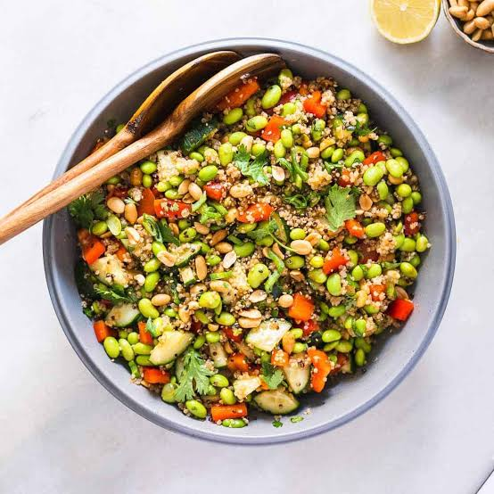

Ensalada de Quinoa

La ensalada de quinoa es una receta fresca, nutritiva y muy completa. La quinoa aporta proteínas de origen vegetal, fibra y minerales, mientras que las verduras frescas le dan color, sabor y vitaminas. Es ideal como almuerzo ligero o como acompañamiento de otras comidas saludables.